Phim dựng bằng code
Phim ngắn, dựng hoàn toàn bằng code.
Chọn một trong 66 phong cách, đưa câu chuyện của bạn, rồi để coding agent đạo diễn: vẽ hình, soạn nhạc, thu giọng đọc, trộn âm và xuất phim.
66 phong cách/không video AI/không cảnh stock
Các phong cách được tinh chỉnh cho Claude Opus 5.5. Model khác có thể không tái tạo tốt.
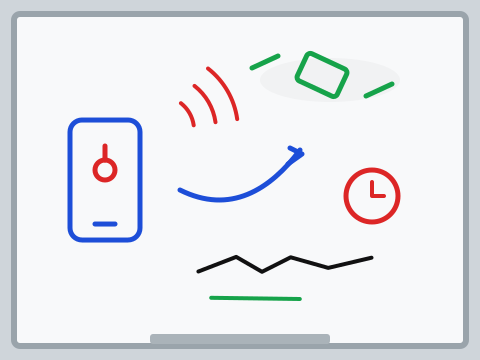
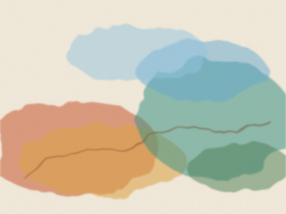
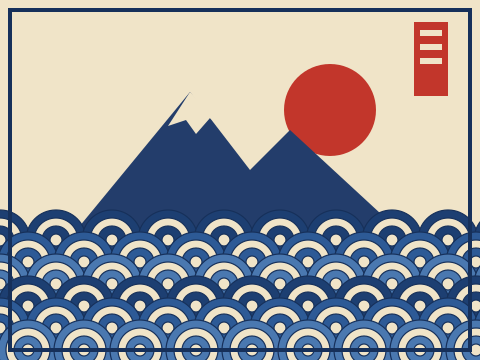
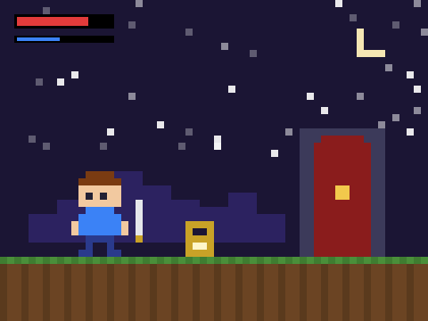
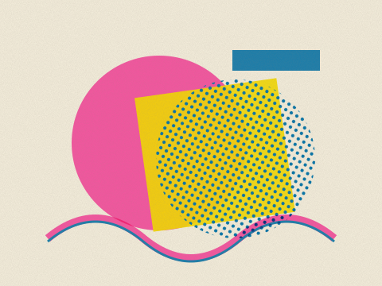
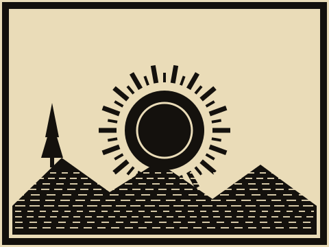
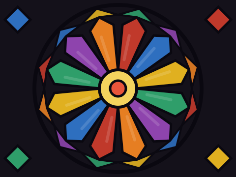
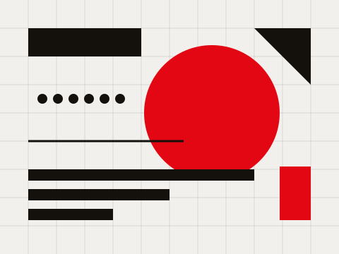
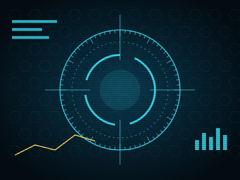
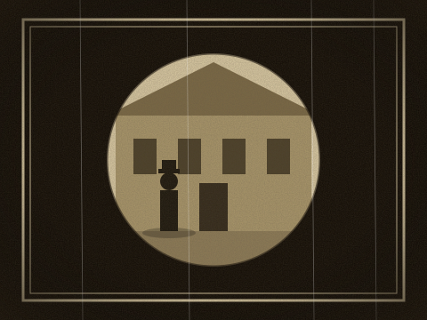
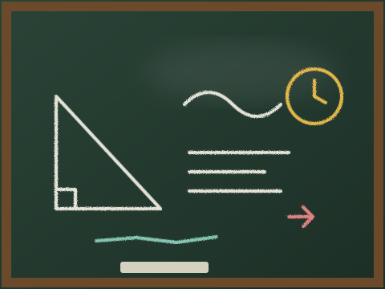
Làm ra một bộ phim thế nào
Không dùng AI sinh video, không dùng cảnh stock. Mọi thứ trên màn hình do agent viết code.
Hình
Trang canvas và WebGL, kết xuất từng khung hình theo đúng phong cách đã chọn.
Nhạc
Nhạc nền gốc dựng từ các thư viện mẫu âm miễn phí, trộn theo nhịp phim.
Giọng
Lời đọc bằng text-to-speech, có bước nghe lại để kiểm phát âm.
Một vài phong cách
Mười hai trong số 66 phong cách. Mỗi phong cách có một tệp STYLE.md mô tả hình, âm thanh và cách dựng.
- Bảng trắng
- Màu nước
- Ukiyo-e
- Pixel RPG
- Bản vẽ kỹ thuật
- In Risograph
- Khắc gỗ
- Kính màu
- Đồ họa Thụy Sĩ
- Giao diện hologram
- Phim câm
- Bảng phấn
Hình minh họa vẽ riêng cho trang này, không phải khung phim thật.
Cài đặt
Cách dễ nhất là cài skill vào Claude Code, rồi khởi động lại và dùng từ thư mục nào cũng được.
claude plugin marketplace add andyluu98/opuscar-vn claude plugin install opuscar-vn@opuscar-vn
Rồi chỉ cần nói điều bạn muốn:
Làm phim 45 giây theo phong cách watercolor về trang trại cà phê gia đình tôi. Giọng nữ ấm áp.
Cần Node 20+, ffmpeg 7+ và Python 3.11+ (hoặc uv). Một bộ phim tốn agent khoảng 30 đến 60 phút. Kho mã đang để riêng tư, máy cài cần đăng nhập GitHub có quyền xem repo.
Tạo phong cách riêng
Đổi một phong cách có sẵn thành của bạn, hoặc bắt đầu từ trang trắng. Màu thương hiệu, logo, nhân vật, giọng điệu kênh đều đổi được.
- Lên kế hoạchMỗi lần một câu hỏi, có lựa chọn và lý do. Nói mơ hồ như "cao cấp hơn" cũng được.
- Xem bản tóm tắtTừng phần trước và sau, kèm cái giá phải trả. Chưa đồng ý thì chưa ghi gì.
- Xem trước một khung hìnhVẽ bằng code thật. Khi đổi phong cách có sẵn, bản gốc nằm cạnh để so.
- Phim mẫu 15 đến 30 giâyMọi thay đổi đều có trên màn hình, kèm nhạc và hiệu ứng âm thanh.
- Giữ lại khi hài lòngPhong cách lưu ở máy bạn, lần sau gọi tên là dùng.
66 phong cách
Bấm vào một phong cách để đọc mô tả đầy đủ (STYLE.md) trên GitHub.
Dựng phim và tư liệu thật 8
- Caption NewsSocial news, Report explainers, Data shorts
- Time-lapse SymphonyCity films, Music montages, Openers
- Live Countdown Split-screenLaunches, Countdowns, Live events
- Constructivist MontageIndustry histories, Milestones, Collective effort
- Broadcast News PackageNews round-ups, Bulletins, Market updates
- 1920s NewsreelHistory stories, Fads & eras, Anniversaries
- Sports TelestratorSports analysis, Match recaps, Coaching
- Visual InvestigationReconstructions, Fact-checks, Incident reports
Phim bằng chứng 8
- Archive Light TableBrand history, Archive stories, Museums
- Engineering Briefing BoardEngineering, Option comparisons, Briefings
- Data PhysicalizationAnnual reports, Investor decks, Energy data
- LiDAR SurveyHeritage, Environment, Site surveys
- Microscope StoryBiomedicine, Materials science, Skincare science
- Satellite BriefingClimate, News explainers, Geography
- Exploded TeardownHardware launches, Product pages, Spec explainers
- Projection on White ModelUrban planning, Exhibitions, City data
Vẽ tay và hội họa 8
- ChalkboardWord origins, Myth-busting, Lessons
- Crayon Picture BookPicture books, Bedtime stories, Kids' learning
- Impasto Oil PaintingMusic videos, Art & culture, Emotional ads
- Chinese Ink WashWuxia, Cultural brands, Poetry
- One-line DrawingBrand stories, Life milestones, Minimal ads
- Urban Sketch · Pen & WashCity & travel, Architecture, Lifestyle brands
- Watercolor BrushNature documentary, Travel, Science explainers
- Whiteboard ExplainerExplainers, Online courses, Science
Truyền thống Đông Á 4
In ấn và khắc 6
- Copperplate EngravingMuseum labels, Science explainers, Brand heritage
- Halftone DossierHumour, Pet content, Social shorts
- Printed Long TakeJourneys, Wildlife, Landscapes
- Risograph PrintIndie brands, Zines, Lifestyle
- Silkscreen Travel PosterDestination guides, Tourism, Event posters
- Woodcut PrintFolk tales, Craft brands, Book trailers
Đồ họa và chữ 7
- Art DecoLuxury & hospitality, Galas, Invitations
- ASCII / CRT TerminalDeveloper tools, Sci-fi, Tech brands
- BlueprintEngineering, Hardware launches, Tech explainers
- Pictogram MotionPublic services and city stories, Brand and event identity films, Explainers told through signs and objects
- 60s Spy Title SequenceTitle sequences, Event openers, Trailers
- Stained GlassLegends, Heritage, Holiday stories
- Swiss Motion GraphicsBrand identity, Events, Design education
Thông tin và thuyết trình 8
- Circuit BoardEnergy, Supply chains, Devices
- Dark Tech KeynoteProduct launches, SaaS, Keynotes
- Data StorytellingData journalism, Reports, Climate & science
- Sci-fi Hologram HUDSpec walkthroughs, Launch videos, Trade shows
- Isometric InfographicProcess explainers, Supply chains, Annual reports
- Isometric Picture BookEveryday rules, Queues, Comparisons
- Living ScreencastProduct tutorials, Feature launches, Onboarding
- Transit MapTransport, Growth over time, Networks
Hoạt hình và anime 4
Trò chơi 4
Điện ảnh và thời kỳ 2
Chất liệu và 3D 7
- Brick ToyToys & kids, Product builds, Space
- Desktop FlythroughApp explainers, Workflows, Products
- Glass Product RenderProduct launches, Consumer tech, Beauty
- Low-poly Isometric IslandGame trailers, World building, Calm content
- Memphis DioramaWeb heroes, Ambient loops, Seasons
- Paper Pop-up BookChildren's books, Game trailers, Story films
- Tilt-Shift MiniatureCity promos, Real estate, Transport